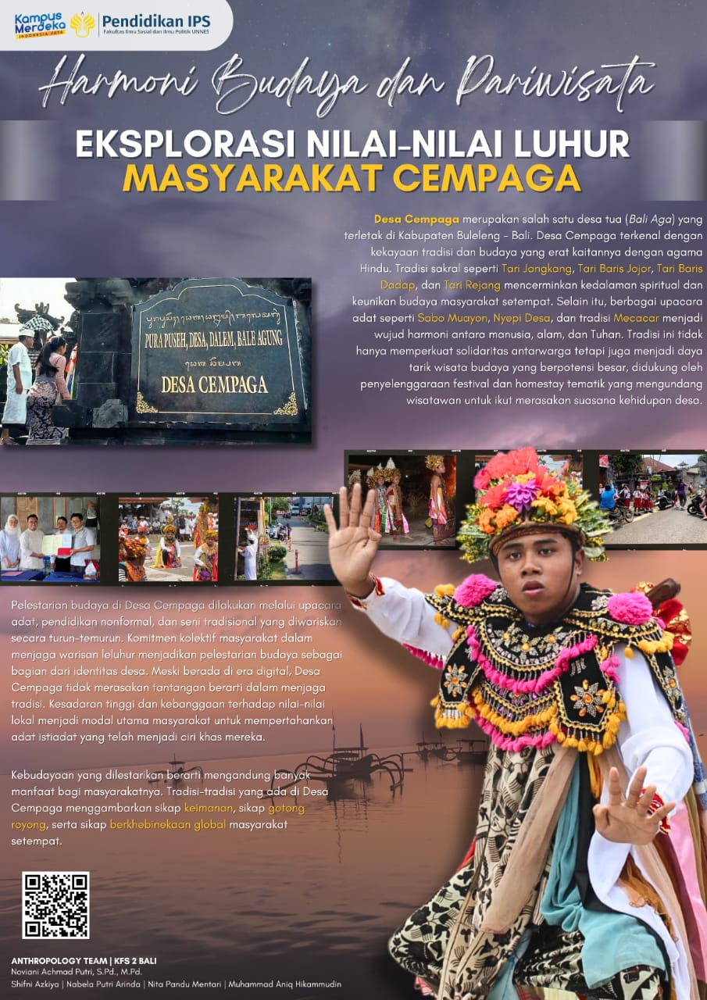
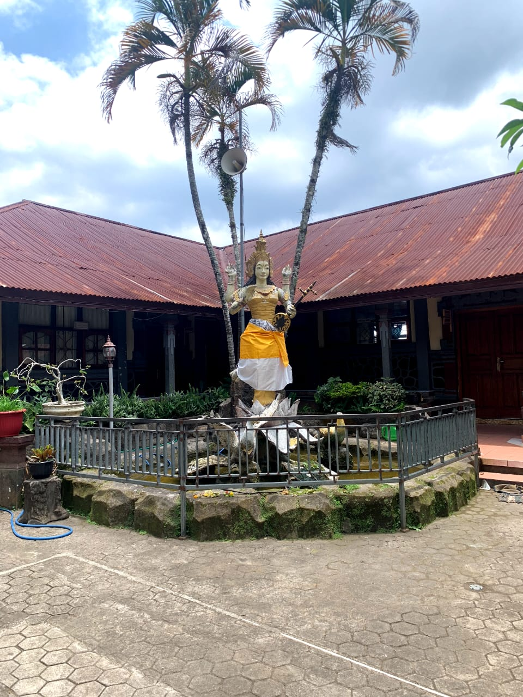
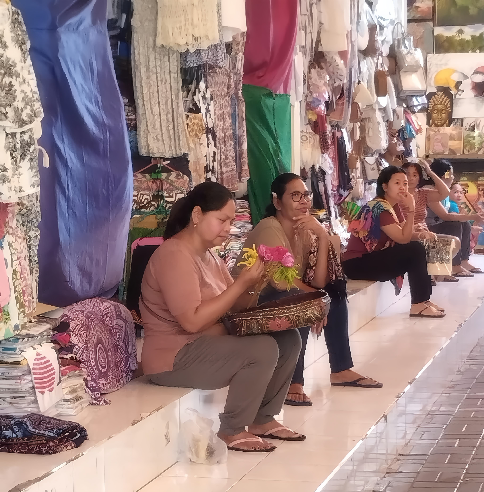

Anthropology Team
PENYUSUN

Shifni Azkiya 3601422044

Nabela Putri Arinda 3601422031

Nita Pandu Mentari 3601422051

Muhammad Aniq Hikamuddin 3601422043
Harmoni budaya dan pariwisata : Eksplorasi nilai nilai luhur masyarakat cempaga
Profil Desa Cempaga
Desa cempaga adalah sebuah desa yang terletak di kecamatan Banjar, Kabupaten Buleleng, Bali. Desa Cempaga dikenal dengan keindahan alamnya, kaya akan budayanya, serta kehidupan masyarakatnya yang masih kental dengan Tradisi dan kearifan lokalnya. Desa Cempaga menawarkan suasana desa yang otentik bagi para pengunjung yang ingin merasakan suasana pedesaan bali yang sangat asri. Cempaga merupakan salah satu desa adat tertua yang dikenal sebagai desa Bali Aga. memiliki dua dusun yaitu Dusun Corot dan Dusun Desa. Desa Cempaga terletak di dataran tinggi dengan pemandangan alam yang memukau.
Budaya dan Tradisi Desa Cempaga

Desa Cempaga memiliki beragam tradisi dan budaya unik yang erat kaitannya dengan agama Hindu. Salah satu warisan budaya yang menonjol adalah berbagai tarian sakral yang hanya ditampilkan dalam upacara-upacara tertentu dan memiliki makna mendalam. Tarian-tarian ini meliputi Tari Jangkang yang menggambarkan prajurit perang dan ditarikan oleh anak-anak yang telah mengalami pergantian gigi, Tari Baris Jojor yang ditarikan oleh laki-laki dewasa lajang sebagai simbol perang, Tari Baris Dadap yang juga merupakan tarian perang dan dilakukan oleh laki-laki dewasa dalam kelompok. Setiap tarian ini mencerminkan kekayaan dan kedalaman tradisi masyarakat Desa Cempaga.
 Upacara keagamaan juga menjadi bagian integral dari kehidupan di
Desa Cempaga, dengan beberapa acara besar yang diselenggarakan
secara rutin. Salah satunya adalah upacara Sabo Muayon yang
berlangsung setiap enam bulan sekali, menampilkan berbagai tarian
sakral dan melibatkan seluruh masyarakat desa. Selain itu, ada
tradisi Nyepi Desa, yang merupakan hari penyucian diri bagi
seluruh warga desa, dan Mecacar, tradisi pembagian sisa makanan
upacara secara merata kepada warga. Tradisi Mecacar ini
melambangkan keharmonisan antara manusia, alam, dan Tuhan,
sekaligus memperkuat solidaritas dan kebersamaan dalam masyarakat
desa.
Upacara keagamaan juga menjadi bagian integral dari kehidupan di
Desa Cempaga, dengan beberapa acara besar yang diselenggarakan
secara rutin. Salah satunya adalah upacara Sabo Muayon yang
berlangsung setiap enam bulan sekali, menampilkan berbagai tarian
sakral dan melibatkan seluruh masyarakat desa. Selain itu, ada
tradisi Nyepi Desa, yang merupakan hari penyucian diri bagi
seluruh warga desa, dan Mecacar, tradisi pembagian sisa makanan
upacara secara merata kepada warga. Tradisi Mecacar ini
melambangkan keharmonisan antara manusia, alam, dan Tuhan,
sekaligus memperkuat solidaritas dan kebersamaan dalam masyarakat
desa.
Masyarakat Desa Cempaga Dalam Menjaga Nilai-nilai Kepercayaan Budaya

Masyarakat Cempaga menjaga nilai-nilai kepercayaan tradisional melalui berbagai cara yang diwariskan dari generasi ke generasi. Pelaksanaan upacara adat menjadi sarana utama untuk merevitalisasi kepercayaan, menghubungkan diri dengan leluhur, alam, dan kekuatan gaib yang mereka yakini. Pendidikan nonformal juga berperan penting, di mana orang tua, tokoh adat, dan pemuka agama mengajarkan nilai moral, etika, dan spiritual kepada generasi muda. Seni dan budaya, seperti tarian, musik, dan kerajinan tangan, digunakan sebagai media pelestarian nilai-nilai kepercayaan, mengandung simbol yang merepresentasikan kosmologi dan keyakinan masyarakat.
Daya Tarik Tradisi dan Kearifan Lokal Desa Cempaga dalam Memikat Wisatawan
Desa Cempaga memiliki potensi besar untuk mengembangkan wisata berbasis budaya yang dapat menarik wisatawan melalui berbagai kegiatan tematik. Salah satu caranya adalah dengan menawarkan paket wisata yang memungkinkan pengunjung untuk ikut serta dalam upacara adat atau belajar tarian tradisional. Selain itu, penyelenggaraan festival budaya secara berkala dapat menjadi sarana promosi yang efektif, menarik minat wisatawan dalam jumlah besar, sekaligus memperkenalkan kekayaan tradisi lokal kepada masyarakat yang lebih luas. Penginapan berupa homestay juga bisa menjadi daya tarik tersendiri, karena memberikan kesempatan bagi wisatawan untuk merasakan kehidupan sehari-hari masyarakat Desa Cempaga dan mempererat.
Tantangan Yang Dihadapi Masyarakat Desa Cempaga di Era Digital
Di Desa Cempaga, adat dan tradisi dilestarikan secara turun-temurun, dengan masyarakat yang merasa memiliki tanggung jawab besar untuk menjaga dan melestarikan warisan leluhur ini. Ada keyakinan kuat di antara warga bahwa jika tradisi dan adat istiadat ini diabaikan, hal tersebut akan dianggap sebagai “kesalahan” bagi warga adat. Nilai-nilai yang diwariskan dari generasi ke generasi ini memberikan rasa identitas dan kebanggaan pada masyarakat Desa Cempaga, menjadikan pelestarian budaya sebagai bagian penting dari kehidupan sehari-hari mereka.
Menurut kepala adat Desa Cempaga, masyarakat desa tidak merasakan tantangan dalam menjaga kelestarian budaya dan tradisi yang ada. Hal ini menunjukkan bahwa masyarakat telah terbiasa dan memiliki komitmen yang kuat untuk melanjutkan warisan budaya mereka tanpa hambatan berarti. Warga Desa Cempaga memiliki kesadaran kolektif yang tinggi, sehingga mereka dapat melestarikan budaya lokal dengan baik dan tetap menjaga nilai-nilai tradisional yang menjadi ciri khas desa mereka.
Relevansi Budaya dan Tradisi Desa Cempaga dengan P5
- Nilai P5 Gotong royong 
- Nilai P5 Berkebhinekaan Global
Desa Cempaga memiliki kekayaan budaya yang diwariskan secara turun-temurun, terutama melalui keunikan upacara adat dan tarian sakralnya, seperti Tari Jangkang dan Tari Rejang. Tradisi seperti Mecacar tidak hanya mempererat hubungan antara manusia, alam, dan Tuhan, tetapi juga memperkuat solidaritas serta harmoni dalam masyarakat. Budaya ini mencerminkan nilai Profil Pelajar Pancasila (P5) pada dimensi gotong royong, yang terwujud melalui semangat kebersamaan dan kerja sama dalam melestarikan tradisi.
Dalam konteks Profil Pelajar Pancasila, dimensi gotong royong mencakup nilai-nilai kolaborasi, kepedulian, dan empati yang bertujuan menciptakan harmoni dalam komunitas. Tradisi Mecacar dan pelaksanaan tarian sakral mengintegrasikan partisipasi aktif masyarakat sehingga menjadi manifestasi nyata dari prinsip gotong royong.

Tarian-tarian yang dipentaskan dalam upacara adat di Desa Cempaga tetap dapat dinikmati dan dipelajari oleh para wisatawan yang berkunjung. Hal ini mencerminkan penerapan nilai Profil Pelajar Pancasila (P5) pada dimensi berkebhinekaan global, khususnya dalam aspek toleransi dan penghargaan terhadap keragaman budaya.
Menurut konsep Profil Pelajar Pancasila, dimensi berkebhinekaan global mencakup kemampuan peserta didik untuk menghargai keberagaman budaya, agama, dan tradisi dalam kehidupan bermasyarakat. Aspek toleransi yang ditunjukkan melalui pembukaan akses terhadap kebudayaan lokal untuk dipelajari oleh wisatawan menegaskan nilai ini.